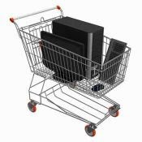
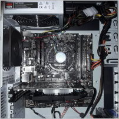

Выбор компьютера, 2019 год + ТОП-6 цена-качество
Лучшие сборки ПК на разные задачи
Как выбрать хороший компьютер по нормальной цене?
Возможно ли собрать или купить недорогой игровой компьютер?
Какие выбрать комплектующие и у кого из производителей они самые надежные?
На что еще обратить внимание при выборе компьютера?
В статье описаны принципы выбора современного компьютера, а в ее конце приведены лучшие конфигурации (сборки) бюджетных, универсальных и игровых компьютеров 2019 года, приоритеты
- высокая надежность, низкая цена и минимальный шум при работе.

Я представляю вам разные подборки комплектующих для ПК для разных задач. Все орентировки на ценовой фактор
Как всем известно, счастье не в деньгах, а в их количестве, поэтому
компьютеры условно делятся на 4 группы:
До 300 у.е. - начальный уровень (бюджетные компьютеры)
Компьютеры этой группы предназначены для простых задач - работа с текстом, Интернетом, просмотр видео, простые игры типа "Зума", а также некоторые современные игры на самых минимальных настройках качества. Используются обычно в офисной работе, но в последнее время все чаще предпочтение отдается более удобным недорогим бюджетным ноутбукам.
300-800 у.е. - средний уровень (универсальные и недорогие игровые компьютеры).
Самый массовый сегмент, так как вычислительной мощности процессоров и возможностей видеокарт компьютеров этой группы достаточно не только для простых задач, но и для большинства мощных ресурсоемких программ, они позволяют в большинстве случаев запускать современные игры на средних и максимальных настройках качества. Оптимальный выбор для большинства домашних пользователей.
Выше 800 у.е. - высший уровень (средние и мощные игровые компьютеры)
. Персональные компьютеры этой группы обладают самой лучшей производительностью, им по зубам любые современные задачи и новые самые тяжелые игры на максимальных настройках качества, но расплата за это - высокая стоимость, а также очень часто повышенный шум системы охлаждения. Есть смысл покупать лишь в том случае, если игры на максимальных настройках качества занимают очень важное место в жизни.
Специализированные компьютеры.
В эту группу попадают персональные компьютеры для инженеров, видеомонтажа и энтузиастов, которые индивидуально подбирав процессор и видеокарту, а оперативной памятью занять все свободные слоты - "на всякий случай, чтобы не было мало"

Вернутся на главную страницу
С вопросами обращайтесь в техподдержку